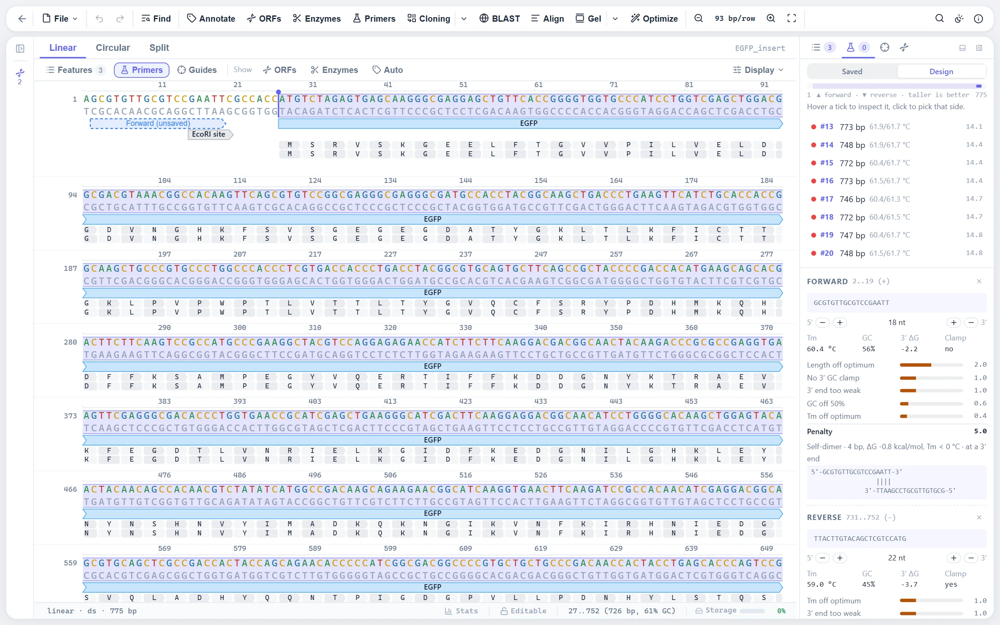

Five design tasks
The Primers tab of the sidebar has a Design view with one task for each thing a lab asks of a primer:
- PCR and qPCR. A pair around a target, and optionally a TaqMan probe between them. The target follows your selection, and regions can be excluded.
- Cloning. Binding parts that start exactly at the insert's ends, behind restriction-site tails (with padding, and a warning if the enzyme also cuts the insert) or homology arms read off a vector for Gibson, HiFi or In-Fusion assembly.
- Mutagenesis. Substitutions, insertions and deletions, as back-to-back pairs (Q5 site-directed mutagenesis style) or overlapping pairs (the QuikChange rule, Tm of 78 °C or more). The mutant opens as a new sequence.
- Sequencing. Primers tiled so reads overlap across a region, each binding the template exactly once.
- Check a primer. Where an oligo you already own binds, in every open sequence.
Any forward and reverse pick can be run as an in-silico PCR: the product opens as a new sequence with both 5' tails built in and the template's features carried over, ready for the cloning workspace.

How a pair is found
- Enumerate candidates. Windows of varying length slide upstream of the target for the forward primer and downstream for the reverse, skipping excluded regions.
- Score each candidate. Hard constraints reject a primer outright; everything else adds to a weighted penalty with a per-term breakdown, so the inspector can say why a candidate scored as it did.
- Pair candidates. The best 200 of each side are combined, filtered by product size, and given pair-level penalties for Tm mismatch and a 3' cross-dimer.
- Rank. Pairs are sorted by total penalty. The top pairs are returned, and the whole candidate landscape (the best candidate per 3' end) is drawn as a track, so either side can be picked by hand.
Picks are oligo sequences: they can be trimmed or extended along the template, are drawn on the sequence and the map as dashed previews, and are re-scored as a pair live. A target longer than the maximum product is reported, not worked around by changing your settings.
Hard constraints
| Criterion | Default |
|---|---|
| Tm | 57 to 63 °C |
| GC content | 40 to 60 % |
| Homopolymer run | 4 bases at most |
Soft penalties
| Criterion | Weight | What it catches |
|---|---|---|
| Tm deviation | 1.0 per °C | Distance from the optimal Tm (default 60 °C) |
| Length deviation | 0.5 per base | Distance from the optimal length (default 20 bp) |
| GC deviation | 0.1 per % | Distance from 50 % GC |
| No GC clamp | +1.0 | No G or C in the last two 3' bases |
| 3' end too stable | +2.0 | ΔG37 of the last five bases below −9.0 kcal/mol, which mispriming forgives |
| 3' end too weak | +1.0 | ΔG37 of the last five bases above −5.0 kcal/mol |
| Self-complementarity | +1.0 / +3.0 | A self-dimer of 5 or more, or 8 or more, paired bases |
| 3' end self-dimer | +1.5 / +4.0 | The 3' end pairs with itself over 3, or 4 or more, bases, which the polymerase can extend |
| Hairpin | +0.5 / +2.0 | A stem of 3, or 4 or more, base pairs |
| Homopolymer run | +0.5 per extra base | Runs of 3 or more |
The pair penalty is the sum of both primers' penalties, plus the Tm difference between them (1.0 per °C), the distance of the product from the optimal size (0.01 per bp), and the 3' cross-dimer penalty. The cross-dimer check looks at the 3' end of both primers, since that is the end a polymerase extends.
Melting temperature
Tm comes from the unified nearest-neighbour model of SantaLucia (1998): enthalpy and entropy are summed over each adjacent dinucleotide step, plus initiation terms for the terminal base pairs, and
Tm = ΔH / (ΔS + R ln(Ct/4)) − 273.15
with R = 1.987 cal/(mol·K) and Ct the total oligo concentration. The result is then corrected for the buffer: the Owczarzy (2004) correction for monovalent cations, or, when magnesium is given, the Owczarzy (2008) divalent correction with free Mg2+ taken as Mg2+ minus dNTPs, since dNTPs chelate magnesium one to one. The implementation is checked against Biopython's Tm_NN reference values. Presets set the buffer: Standard PCR, GC-rich template, Long amplicon (1 to 5 kb) and qPCR with probe.
A primer's Tm at a binding site is taken against the template bases it actually faces. Internal mismatches use the Allawi and SantaLucia and the Peyret mismatch tables, and the first tail base uses the terminal-mismatch table, so a primer with a mismatch in its middle gets the lower Tm it deserves. A tailed primer has two Tms, both shown: the annealed part, which matters for the first cycles, and the whole oligo, once the tail has been copied into the product.
The same model runs behind the selection tooltip: select any 15 to 200 bp and read its Tm. Below 15 bp the tooltip uses the Wallace rule, 2 °C per A or T and 4 °C per G or C.
Hairpins and dimers
The inspector and the hover card of every primer show the Tm of its strongest hairpin and its strongest self-dimer. These use a simplified nearest-neighbour model, so they are shown as estimates:
- Self-dimer. The oligo is slid antiparallel along a copy of itself. At every offset the most stable ungapped paired stretch is found (single internal mismatches allowed), and the best is scored as a duplex. Both strands are the same molecule, so the equilibrium constant is 1/Ct, and the dimer's Tm rises with oligo concentration, as it does in the tube.
- Hairpin. Every loop of three or more bases is tried, the stem zipped outward from the loop for as long as the bases pair perfectly, and each fold scored with the stem's nearest-neighbour terms, a terminal mismatch across the closing pair and the hairpin-loop penalty of SantaLucia and Hicks (2004). A hairpin melts where ΔG is zero, independent of concentration.
Each structure is graded against the Tm at which the primer itself anneals:
| Grade | Structure Tm |
|---|---|
| Good | At least 15 °C below the annealing Tm, or no structure |
| Ok | Between 15 and 5 °C below the annealing Tm |
| Poor | Less than 5 °C below the annealing Tm |
A structure that pairs the oligo's 3' end is graded one step worse, because a polymerase can extend it into primer-dimer or self-primed product. For a probe the card also checks the TaqMan rules: no G at the 5' end, where it would quench the reporter, and a Tm margin over the flanking primers of 6 °C or more.
Defaults you can change
| Parameter | Default |
|---|---|
| Tm range, optimal Tm | 57 to 63 °C, 60 °C |
| Primer length | 18 to 25 bp |
| Product size | 150 to 1000 bp |
| GC content | 40 to 60 % |
| Na+ | 50 mM |
| Mg2+, dNTPs | 1.5 mM, 0.8 mM |
| Primer concentration | 250 nM |
Primers as oligos
A primer is stored as the oligo you would order: its full 5' to 3' sequence, tails included. Where it binds is never stored. It is recomputed from the sequence: 10-mer seeds find candidate diagonals on both strands in one pass over the template, and the best-scoring run of paired bases along each diagonal is the annealed part. Whatever lies outside that run is a tail, so restriction sites, homology arms and promoters need no special handling. A primer counts as bound only where its 3' end pairs; a probe anywhere.
Oligos you keep across sequences live in the primer library, with folders, tags, notes and search. They come in by paste or file (CSV or TSV with name and sequence columns, FASTA, or bare sequences) and go out as CSV, FASTA or a tab-separated order sheet with name, sequence, scale and purification, the way vendor bulk-entry forms take them. When you open a sequence that library primers bind, the editor offers them, and each binding site is drawn on the sequence and the map. An off-target scan reports weaker sites where a primer's last 8 bases pair perfectly.
Where to find it
Open a sequence, select the target, and open the Primers tab in the sidebar; its Design view holds the five tasks. Hover any primer on the sequence or the map for its card with Tm, GC, hairpin and dimer grades, and the restriction sites in its tail. The library is the Oligos group of the explorer.
Limits
- The hairpin and dimer model counts only ungapped helices. Bulges and internal loops are not modelled, and hairpins get no special triloop or tetraloop bonus, so these Tms are estimates, not Primer3's full thermodynamic alignment.
- The hairpin salt correction uses a formula fitted on duplexes, an approximation.
- Off-target sites are reported by a perfect match of the last 8 bases, not by a full thermodynamic scan of the template.
References
- SantaLucia J Jr. (1998) A unified view of polymer, dumbbell, and oligonucleotide DNA nearest-neighbor thermodynamics. Proc Natl Acad Sci USA 95:1460-1465.
- Owczarzy R et al. (2004) Effects of sodium ions on DNA duplex oligomers: improved predictions of melting temperatures. Biochemistry 43:3537-3554.
- Owczarzy R et al. (2008) Predicting stability of DNA duplexes in solutions containing magnesium and monovalent cations. Biochemistry 47:5336-5353.